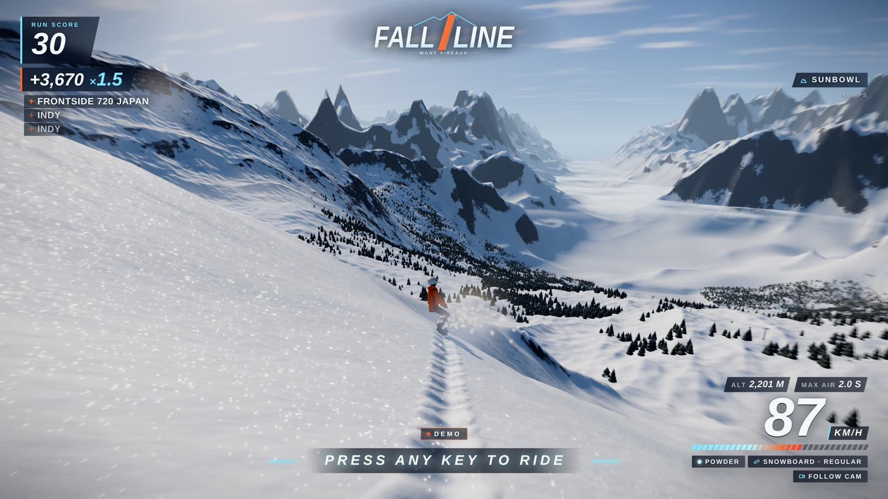
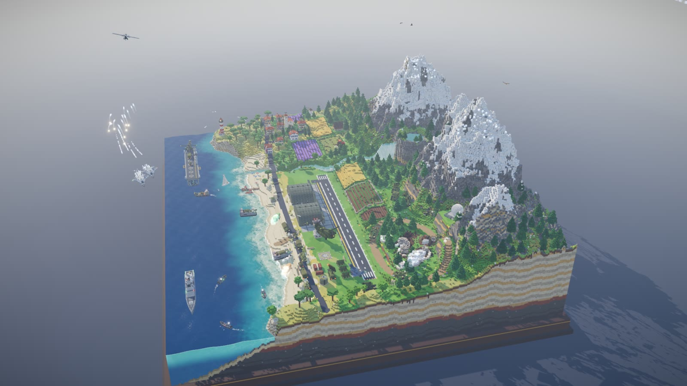
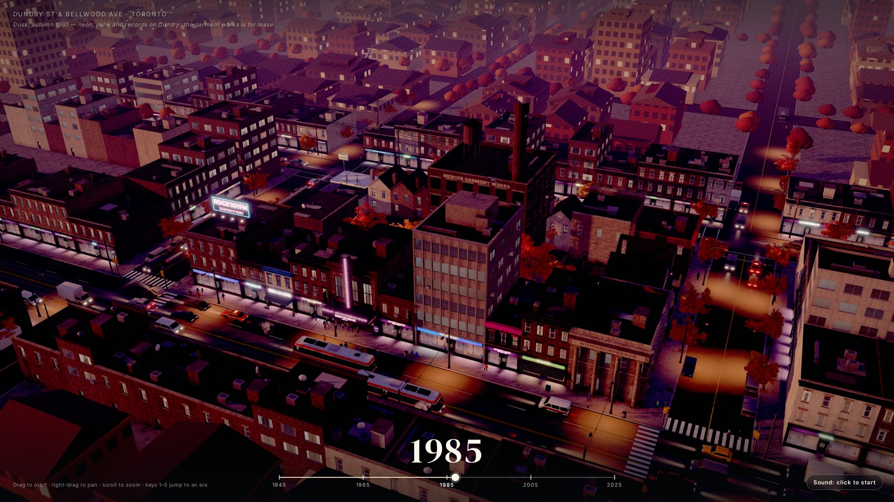

每个项目都收到一份详细需求和时间预算。Claude Opus 5.5 在 Claude Code 中独立规划、编写代码、截图检查并修复问题；原版制作过程中没有人工答疑或修改代码。
这里是 zzzhengqi 的 Fork 试玩站。Fall Line 已加入简体中文界面、暴雪天气与火箭单板；其余三个作品保留原版。四个原版项目均在时间预算耗尽前自行完成。

在巨大雪山上体验自由滑行、暴雪和火箭推进

带有镜头巡游的动态体素场景

多伦多的一个街区，1945 年至 2025 年
实时电影场景，按空格发射侧舷炮